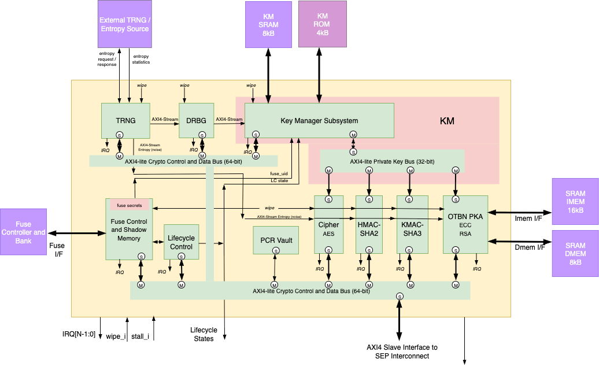

1. Cryptographic Subsystem
The cryptographic subsystem is composed of hardware and software. The hardware subsystem has a number of accelerators interconnected by two distinct buses:
-
AXI4-lite data and CSR bus
-
Mastered by top host AXI4-lite bridge
-
-
AXI4-lite secret key bus
-
Mastered by Key Manager
-
The subsystem’s hardware components are modified versions of the OpenTitan components and the firmware is also based on the OpenTitan cryptographic library.
The primary modifications to the hardware is the separation of the key and data bus interfaces and the switch from TL-UL interface protocol to AXI4-lite. In OpenTitan, keys are transferred from the Key Manager to the Cryptographic accelerators via dedicated ``side loading'' interfaces. While this does physically separate key and data transport it is not scalable and requires modifications to the Key Manager whenever a new accelerator is added to the subsystem.

The sep_crypto module implements the integration layer. A single 64-bit AXI slave port from the SEP system fabric feeds an axi_demux that decodes the address and routes each transaction to the appropriate accelerator or internal peripheral. Each OpenTitan wrapper converts the AXI bus to TL-UL through a standard three-stage pipeline: axi_dw_converter (64-bit to 32-bit), axi_to_axi_lite, and axi_lite_to_tlul. The Key Manager drives a private AXI4-Lite key bus to each accelerator wrapper, which maps key words into the sideload structures expected by the OpenTitan cores.
Alerts from all crypto components are collected by 11 prim_alert_receiver instances within sep_crypto and aggregated into a single crypto_alert_o output. Each accelerator has its own independent software-controllable reset, gated with the system reset through the SEP Reset Controller.
1.1. HMAC-SHA2
The HMAC component is based on the OpenTitan HMAC design.
OCH Modifications
-
AXI4-lite key bus slave interface replaces side loading interface
-
AXI4-lite control/status bus slave interface
The hmac_wrapper receives a 64-bit AXI slave port from the crypto crossbar and narrows it to 32-bit AXI, then to AXI-Lite, and finally to TL-UL for the tt_hmac core. The address path subtracts the HMAC base address and masks to a 13-bit window (8 KB), accommodating both the register space and the message FIFO window at offset 0x1000. The Key Manager provides an 8-word-per-share key through the hmac_wrapper_key_reg block, which maps directly to the keymgr_key_i sideload input. HMAC exposes a single fatal alert channel (index [0] in the sep_crypto aggregation), three interrupts (done, fifo_empty, err), and an idle_o status output. Unlike the other crypto wrappers, HMAC has no EDN connection.
For the full HMAC theory of operation and register map, refer to the OpenTitan HMAC documentation.
1.2. OTBN PKA Public Key Accelerator
The module is based on the OpenTitan OTBN design.
Features:
-
Fully programmable big integer processor
-
256-bit data path with 32 entry register file
-
32-bit control path with 32 entry register file
-
Complex flow control: conditional branching, loops, call/return with optimized hardware for performance
-
Dual status control bits to assist in big integer computation
-
Optimized modular arithmetic on big integers
-
-
Access to entropy noise stream from the TRNG
The OTBN is programmed in assembly and its runtime driver library currently supports the following algorithms:
-
ECDSA P256, P384
-
ECDH P256, P384
-
Ed25519
-
X25519
-
RSA 2k, 3k, 4k
-
Key generation, signature generation and signature verification
-
-
SHA256, SHA-512
Since the OTBN is programmable, more algorithms can easily be developed at a later time. The microcode is loaded into SRAM based instruction memory allowing firmware updates to be made in the field.
OCH Modifications
-
AXI4-lite key bus slave interface replaces side loading interface
-
AXI4-lite control/status bus slave interface
The sep_crypto_otbn_wrapper is the most complex of the OpenTitan wrappers. The 64-bit AXI slave port requires a CACHE_MODIFIABLE bit fix before the axi_dw_converter, because the VeeR CPU may emit non-modifiable cache attributes for MMIO accesses that would be rejected by the AXI-to-AXI-Lite converter. After data-width conversion and protocol bridging, TL-UL drives the standard otbn core configured with Stub = 0 and RegFile = RegFileFF.
OTBN’s instruction and data memories are external SRAM macros; the IMEM and DMEM prim_ram_1p_scr ports are brought out of the wrapper to the sep_crypto top level. The key bus is wider than other accelerators: the otbn_wrapper_key_reg block maps 12 words per share to the keymgr_pkg::otbn_key_req_t structure. The two random-number request ports (edn_rnd, edn_urnd) are served over native-protocol EDN by the shared drbg_axis_edn_adapter instance u_axis_edn_crypto in sep_crypto, which converts the post-CSRNG DRBG AXI-Stream feed assigned to the crypto sink domain into per-client EDN responses. The adapter forwards the per-beat FIPS provenance through a generic AXI-Stream tuser sideband so OTBN RND observes compliant entropy and does not assert rnd_fips_chk_fail. The OTP scramble key handshake is tied to fixed values. Life-cycle escalation and RMA request signals are tied to their inactive state. OTBN occupies alert indices [2:1] in the crypto aggregation and exports a single intr_done_o interrupt.
For the full OTBN theory of operation, instruction set, and register map, refer to the OpenTitan OTBN documentation.
1.3. AES Cipher
The module is based on the OpenTitan AES design.
Key sizes: 128, 192 and 256 Modes: ECB, CBC, CFB, OFB, CTR, CTR-GCM
The accelerator consumes 128-bit data blocks written into its CSR memory space and produces 128-bit output blocks round number of cycles. The round value depends on the key size used.
-
128 bit key: 10 rounds
-
192 bit key: 12 rounds
-
256 bit key: 14 rounds
OCH Modifications
-
AXI4-lite key bus slave interface replaces side loading interface
-
AXI4-lite control/status bus slave interface
The aes_wrapper follows the standard three-stage bus conversion (64-bit AXI → 32-bit AXI → AXI-Lite → TL-UL) without address adjustment or cache-attribute patching. The aes_wrapper_key_reg block provides an 8-word-per-share key mapping to the keymgr_pkg::hw_key_req_t sideload input. EDN requests are served by the shared drbg_axis_edn_adapter instance u_axis_edn_crypto, which converts the post-CSRNG DRBG AXI-Stream feed for the crypto sink domain into AES’s native-protocol EDN response. The adapter forwards the per-beat FIPS bit from the stream’s tuser sideband into edn_fips; AES itself does not consume the flag. The AES core uses rst_ni for both the main and shadow reset domains. Life-cycle escalation is tied to its inactive state. AES occupies alert indices [4:3] in the crypto aggregation and exports an idle_o status output but no interrupt.
For the full AES theory of operation, modes, and register map, refer to the OpenTitan AES documentation.
1.4. KMAC-SHA3
The module is based on the OpenTitan KMAC design.
OCH Modifications
-
AXI4-lite key bus slave interface replaces side loading interface
-
AXI4-lite control/status bus slave interface
The kmac_wrapper uses the same bus conversion pipeline as AES. The address path subtracts the KMAC base address and masks to a 12-bit window (4 KB) before the axi_to_axi_lite stage, aligning the internal decoder with the OpenTitan register block. The kmac_wrapper_key_reg block provides the same 8-word-per-share key mapping. EDN is handled identically to AES: KMAC is one of the four clients arbitrated by u_axis_edn_crypto (the shared drbg_axis_edn_adapter), served from the same post-CSRNG DRBG AXI-Stream feed. The app_i application interface is tied off since the SEP does not use the KMAC hardware application path. Life-cycle escalation is inactive. KMAC occupies alert indices [6:5] in the crypto aggregation and exports three interrupts: done, fifo_empty, and err.
For the full KMAC theory of operation and register map, refer to the OpenTitan KMAC documentation.
1.5. True Random Number Generator (TRNG)
Entropy bits are fundamental data for key generation as well as for attack countermeasure implementations. The entropy source must be high quality, meaning that it meets the NIST SP 800-90B statistical requirements for a cryptographic source.
The True Random Number Generator subsystem consists of the following elements:
-
Entropy source
-
Entropy extractor, debiaser and whitener
-
Statistical health online testing and reporting
-
Entropy distributor
The entropy source is typically a digital circuit employing ring oscillators which produces the random bit stream. Random bits are generated based on metastable sampling effects resulting from process, voltage and temperature variations in the delay of the asynchronous oscillator sampling. Once the entropy source is enabled it generates a continuous stream of random bits. The raw entropy stream will usually exhibit statistical biases. Debiasing is done with an LFSR like circuit which combines bits at a distance and down samples the stream. The debiaser is followed by a whitener which is most often implemented using a cryptographic hash function such as SHA256. Acceptable choices are listed in the NIST specification. The debiaser and whitener will improve the statistical properties of the stream, increasing the entropy rate, while reducing the actual bit stream rate.
The online health tester monitors statistical metrics on both the raw entropy stream as well as the post-processed, whitened entropy stream on the TRNG output. Health monitoring tests include repetition count and markov tests, specified by NIST in addition to other tests such as bucket and Markov tests. The goal of the health monitor is to detect any measurable degradation in entropy quality due to external effects such as environment or active attack and to alert the security system of the degradation via alarm interrupts. Metrics can be queried by software via the CSRs.

In OCAH the whitened entropy stream from the noise source is not routed
directly to the cryptographic accelerators. Instead it seeds the DRBG,
and the post-CSRNG output of the DRBG (NIST SP 800-90A; HMAC-SHA2 or
AES-CTR construction) is what fans out to the rest of the crypto
subsystem. The DRBG exposes two AXI-Stream EDN endpoints
(u_drbg.edn_axis_o[1:0]) that carry conditioned, DRBG-generated bits,
one per sink domain:
-
endpoint
[0]feeds the Key Manager sink domain; -
endpoint
[1]feeds the four native-EDN crypto clients (AES, KMAC, OTBN edn_rnd, OTBN edn_urnd) throughu_axis_edn_crypto— thedrbg_axis_edn_adapterthat converts the 32-bit AXI-Stream feed into a small round-robin native-protocol EDN fan-out.
FIPS provenance is carried per-beat on a generic AXI-Stream tuser
sideband. The adapter forwards this bit into each client’s edn_fips so
that FIPS-aware consumers such as OTBN RND — which latches the bit and
raises rnd_fips_chk_fail on a non-FIPS ack — observe the correct
provenance of the bits they are receiving.
The noise is distributed via streaming interfaces. The stream interface is generic and compatible with AXI-Stream and TLUL-Stream. The following table describes the stream interface. Source is the generator of the signal. Sink is the consumer. The entropy streaming interface will not require address or mask signals.
| Signal | Polarity | Width Range | Description |
|---|---|---|---|
valid |
source |
1 |
Active high indicates that the streaming data beat is valid. |
ready |
sink |
1 |
Backpressure from the receiver. Active high indicates the sink can accept new data. Low informs the transmitter that it should hold off sending more data until the sink is ready again. |
data |
source |
[1,N] |
Streaming payload data can be any width 1 to N bits. If the mask signal is used its width must be a multiple of bytes. |
address |
source |
[0,M] |
Optional. Used when multiple sink endpoints are available. M can be any integer width |
mask |
source |
Optional. Byte mask if only a subset of the data is consumed by the sink |
1.6. PCR Vault (PCRV)
The PCR Vault component provides support for Attestation.
The PCR Vault exposes an AXI4-Lite register interface and provides extend-only storage for attestation measurements.
The PCRV has the following registers:
-
24 PCR registers, each 384 bits wide (corresponds to 12 words)
-
32 control registers, each 32 bits wide
Extend-Only Enforcement
The SEP host does not have a direct write path to the PCR data. In other words, PCR registers are read only from the perspective of SEP firmware. To update the PCR values, the host writes to an Extend Register which triggers the local FSM to perform the following operations:
-
Read the requested PCR register value and move it to the first hash block. Lock that portion of the first data block to ensure that firmware cannot overwrite the value.
-
Concatenate the new data for hashing. Do this by writing new data into hash blocks and performing hash operations until all new data is consumed.
-
Write the hash digest results back to the original PCR register